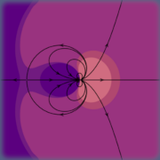

Problemas resolvidos de Eletromagnetismo e Circuitos
por Jaime E. Villate e
Luís Miguel Martelo.
Universidade do Porto, Portugal.
2023.
Esta é a versão HTML dum livro que será publicado brevemente. Antes
da publicação do livro estas páginas poderão sofrer alterações.
Neste livro são resolvidos alguns dos problemas do livro:
Eletromagnetismo e Circuitos.
Conteúdo
- Força eléctrica
- Cálculo do campo elétrico
- Potencial eletrostático
- Energia eletrostática e capacidade
- Força eletromotriz corrente e resistência
- Circuitos de corrente contínua
- Força magnética
- Cálculo do campo magnético
- Indução eletromagnética
- Circuitos de corrente variável
- Circuitos de corrente alternada
- Equações de Maxwell
- Ondas eletromagneticas